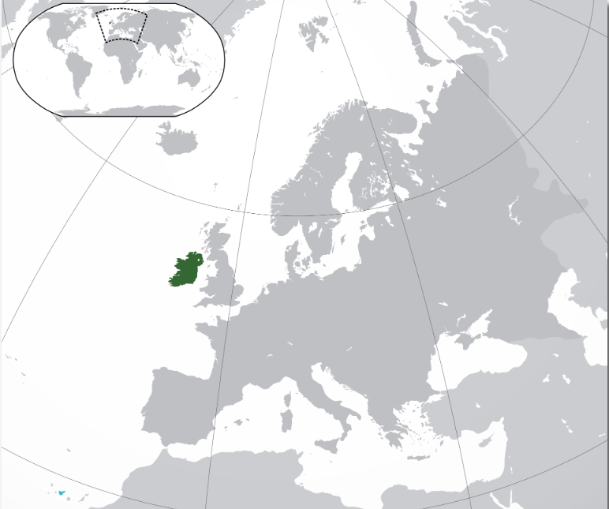
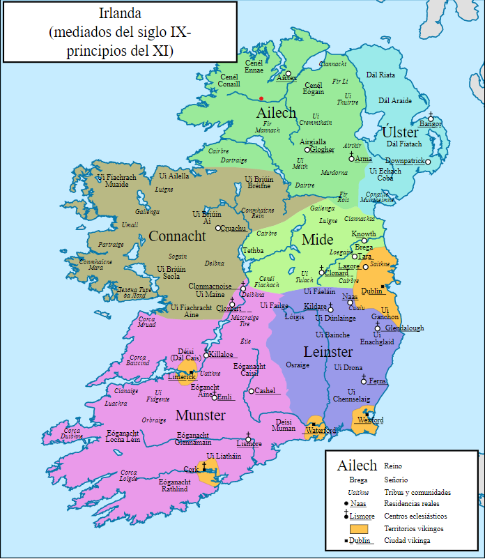

Es una isla en el Atlántico Norte. Está separado de Gran Bretaña hacia el este por el Canal Norte, el Mar de Irlanda y el Canal de San Jorge. Irlanda es la segunda isla más grande de las Islas Británicas, la tercera más grande de Europa y la vigésima más grande de la Tierra. Geopolíticamente, Irlanda se divide entre la República de Irlanda (oficialmente llamada Irlanda), que cubre cinco sextos de la isla, e Irlanda del Norte, que es parte del Reino Unido. En 2011, la población de Irlanda era de aproximadamente 6,6 millones, lo que la clasificó como la segunda isla más poblada de Europa después de Gran Bretaña. A partir de 2016, 4.8 millones viven en la República de Irlanda, y 1.8 millones viven en Irlanda del Norte.
Desde la llegada de los primeros moradores en el s. VIII a.C., las diferentes tribus celtas necesitaron unos 500 años para establecerse en Irlanda. Los últimos, conocidos como gaélicos, desembarcaron en el s.III a.C. y dividieron la isla en cinco provincias: Leinster y Meath, Connaught, Ulster y Munster, subdivididas a su vez en territorios controlados por hasta 100 reyes y jefes tribales menores, que juraban lealtad a un jefe supremo con trono en Tara, en el condado de Meath.
Los celtas pusieron los cimientos de la actual cultura irlandesa. Estos idearon un sofisticado código legal, las Leyes Brehon, vigente hasta principios del s. XVII, y sus diseños laberínticos y retorcidos, que ya se aprecian en objetos con 2000 años de antigüedad, son el típico ejemplo de motivos irlandeses, como se puede apreciar en el Broighter Hoard del National Museum de Dublín. La Turoe Stone, en el condado de Galway, es otra excelente representación del arte celta.
